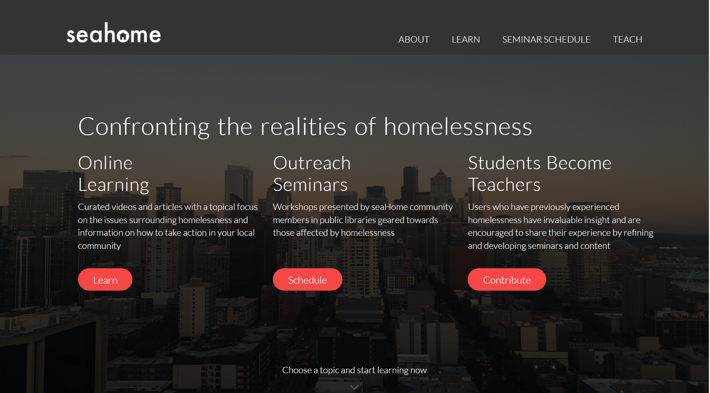

Seahome site
July 14th, 2016
This was an end of course project that I worked on with three others for an Informatics class at UW. Our goal for this project was to create an online educational platform primarily geared toward those affected by homelessness. The platform was intended to help both those affected by homelessness and those who are not. To do that we focused on correcting some the misinformation that is spread about the systemic problem of homelessness and by connecting those who are affected to resources that could help them navigate the system.
